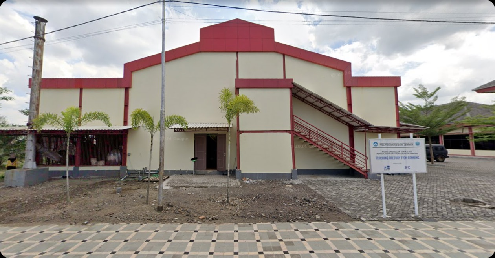

Awal 2000-an
Berdiri sebagai bagian dari UPT Pengolahan dan Pengemasan Produk Pangan (UP3), belum menjadi TEFA tersendiri.

Mengenal lebih dekat Teaching Factory (TEFA) Fish Canning Polije, pusat pelatihan dan produksi ikan kaleng berstandar industri yang memadukan pendidikan vokasi dengan dunia kerja nyata.
Sarden ini merupakan produk asli dari Politeknik Negeri Jember. Seluruh formulasi resep dan proses produksinya merupakan hasil karya dan penelitian mahasiswa, mulai dari peracikan bumbu, penyesuaian mesin, hingga pengaturan suhu. Produk ini dibuat tanpa bahan pengawet.

Sejarah Berdirinya
Berdiri sebagai bagian dari UPT Pengolahan dan Pengemasan Produk Pangan (UP3), belum menjadi TEFA tersendiri.
UPT dipecah dan resmi berdiri sendiri sebagai Teaching Factory (TEFA) Pengalengan Ikan (Fish Canning).
Mendapatkan revitalisasi fasilitas secara bertahap untuk menunjang operasional dan kualitas pembelajaran.
Resmi berpindah dan beroperasi penuh di gedung baru sebagai hasil akhir dari proses revitalisasi.
Mendukung Visi dan Misi Kementerian Pendidikan, Kebudayaan, Riset, dan Teknologi dengan mewujudkan pendidikan tinggi vokasi yang unggul dan berdaya saing dalam teknologi terapan.
Struktur Organisasi
Data struktur organisasi belum dapat dimuat.